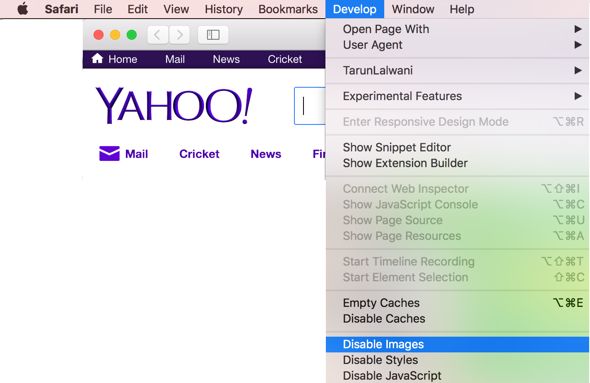

Sometimes during testing or scraping a website, we are not interested in loading the images on the page. Disabling images helps up speed up the page load times and make execution faster.
Even if we are interested in knowing the location (source) of images, we can still disable loading of all the images in GUI. In Selenium each browser requires different techniques to do so. We will look at each one of them one by one
Disabling Images in Internet Explorer
Internet Explorer doesn’t provide any option for disabling images through commandline, so we would need to use Registry for the same
from _winreg import *
key = OpenKey(HKEY_CURRENT_USER, r"Software\Microsoft\Internet Explorer\Main", 0, KEY_ALL_ACCESS)
SetValueEx(key, "Display Inline Images", 0, REG_SZ, "no")
CloseKey(key)
Once the images are disabled in registry, we just launch the browser and test it
from selenium import webdriver
driver = webdriver.Ie()
driver.get("http://www.tarunlalwani.in")
Disabling Images in Firefox
For disabling images in Firefox we need to change the profile settings. The same can be achieved in code as below
from selenium import webdriver
profile = webdriver.FirefoxProfile()
# 1 - Allow all images
# 2 - Block all images
# 3 - Block 3rd party images
profile.set_preference("permissions.default.image", 2)
driver = webdriver.Firefox(firefox_profile=profile)
Disabling Images in Chrome
Long ago chrome used to support a command line flag --disable-images, which was deprecated. Now we need to use the chrome.prefs of the chromedriver. For more details refer this
from selenium import webdriver
option = webdriver.ChromeOptions()
chrome_prefs = {}
option.experimental_options["prefs"] = chrome_prefs
chrome_prefs["profile.default_content_settings"] = {"images": 2}
chrome_prefs["profile.managed_default_content_settings"] = {"images": 2}
driver = webdriver.Chrome(chrome_options=option)
driver.get("http://www.yahoo.com")
Disabling Images in PhantomJS
PhantomJS is a headless webkit browser. It can run without a X display on a server and very useful when we want to test a website in fast mode. Disabling images on the same, can even make the testing more effective.
from selenium import webdriver
driver = webdriver.PhantomJS(service_args=["--load-images=no"])
driver.get("http://www.yahoo.com")
driver.save_screenshot("yahoo.png")
Disabling Images in Safari (Mac OSX)
Safari browser by default doesn’t show any option to disable images in the browser itself. These options are accessible by enabling the developer menu in the preferences first. To enable the same follow the below steps
- In Menu select Safari -> Preferences (⌘,)
- Go to Advanced tab
- Check the “Show Develop menu in the menu bar” option

One developer mode is enabled, we can disable images using the Develop menu as show in below image

The same can be achieved through terminal as well using the defaults command
$ defaults write WebKitDisplayImagesKey -bool false
$ defaults write com.apple.Safari com.apple.Safari.ContentPageGroupIdentifier.WebKit2LoadsImagesAutomatically -bool false
Re-enabling display of images in Safari
To re-enable display of images, we just need to change the values from false to true
$ defaults write WebKitDisplayImagesKey -bool true
$ defaults write com.apple.Safari com.apple.Safari.ContentPageGroupIdentifier.WebKit2LoadsImagesAutomatically -bool true